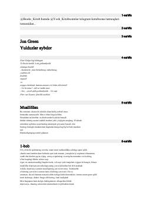

SMMehmet Erjanning sevgi va his-tuyg'ularga bag'ishlangan lirik asari.
Bu kitob turk yozuvchisi Mehmet Erjanning lirik asari bo'lib, sevgi, yo'qotish va ichki his-tuyg'ular haqida yozilgan. Muallif o'z hayoti va taqdiriga oid chuqur fikrlarini o'quvchi bilan baham ko'radi. Kitob 2023-yilda Toshkentda BEST BOOK nashriyoti tomonidan chop etilgan.